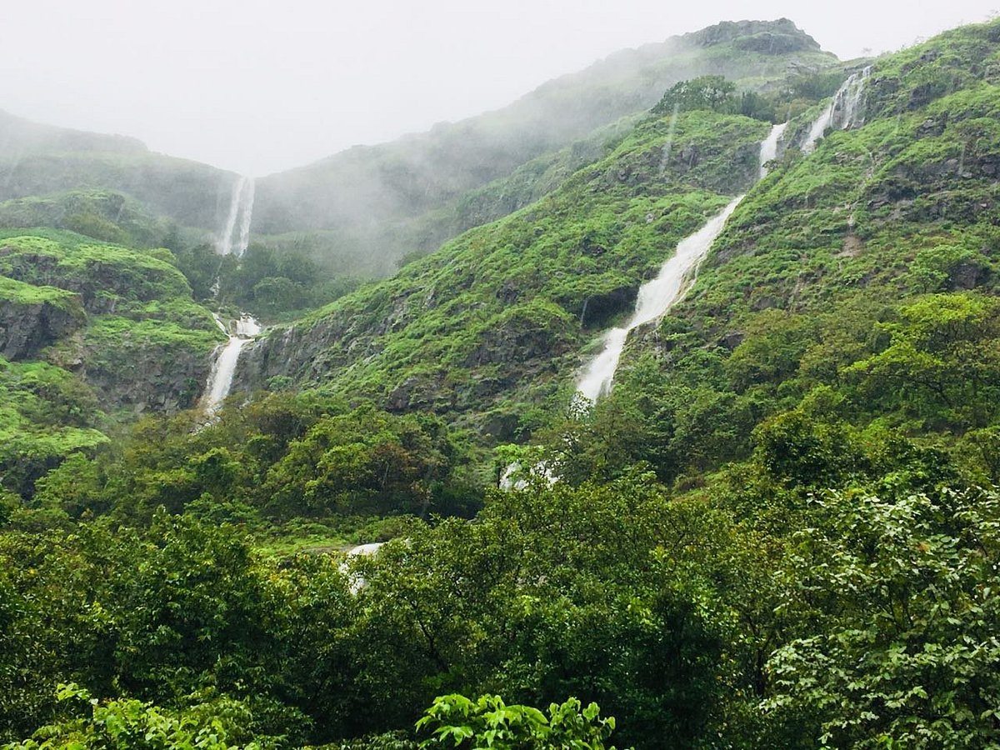
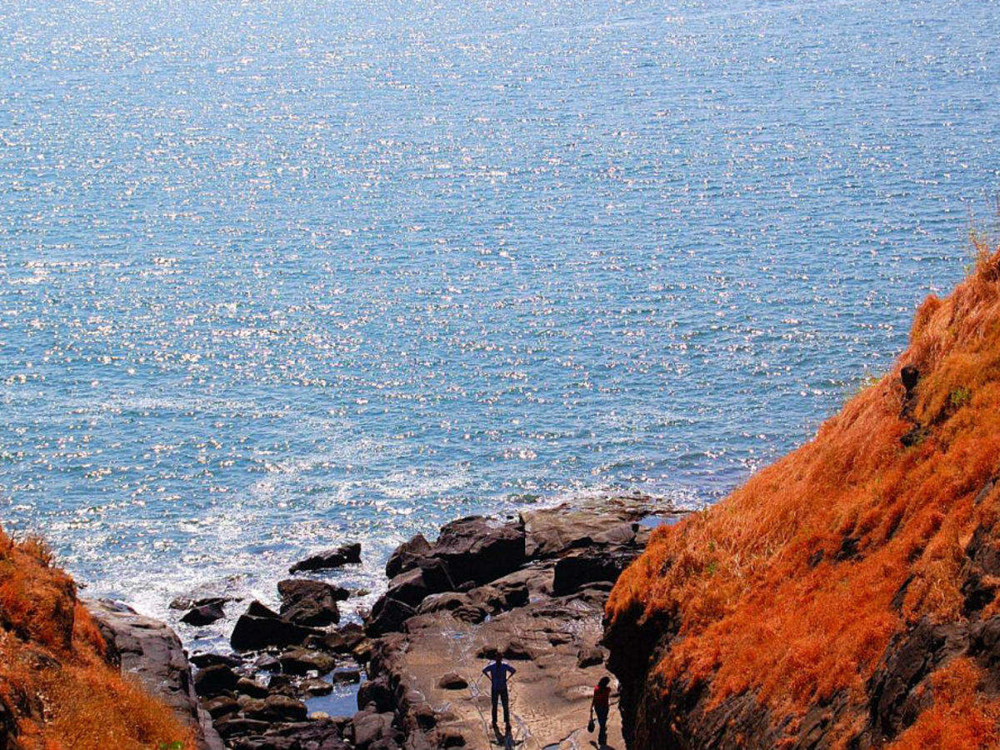
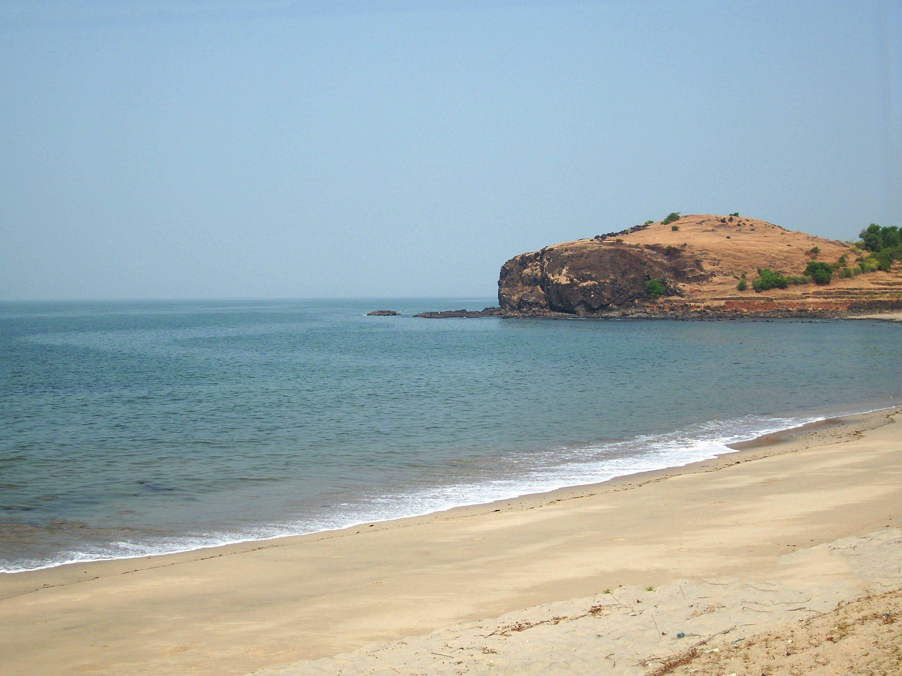
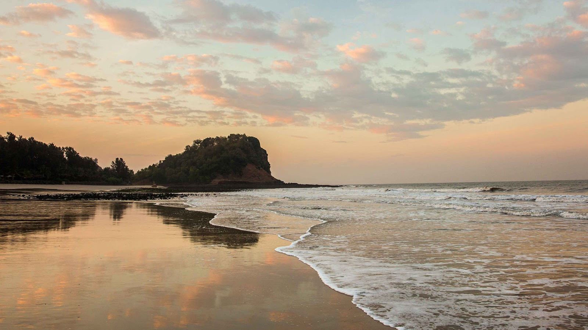
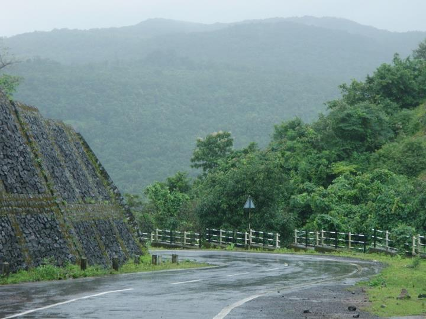
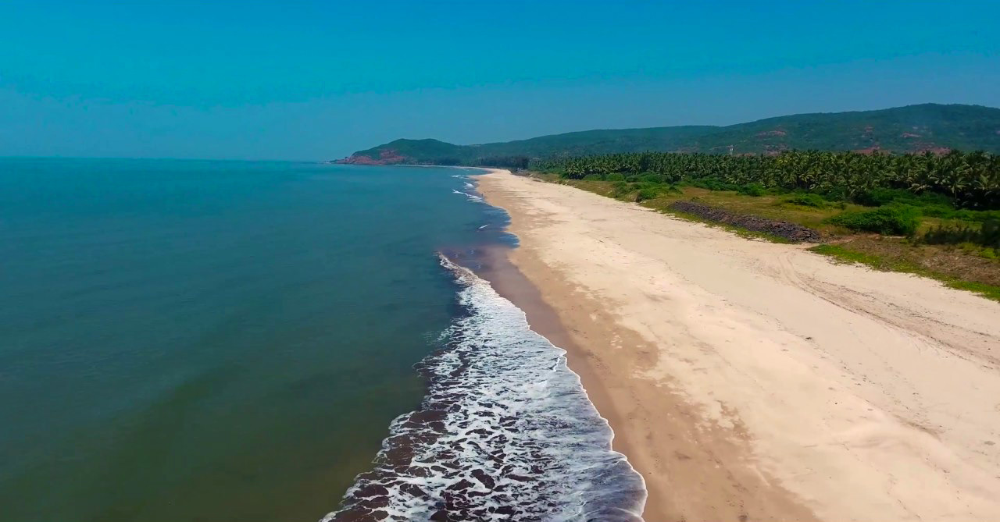
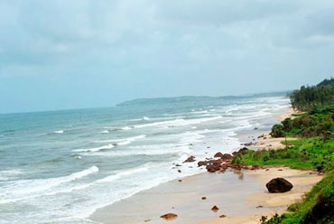
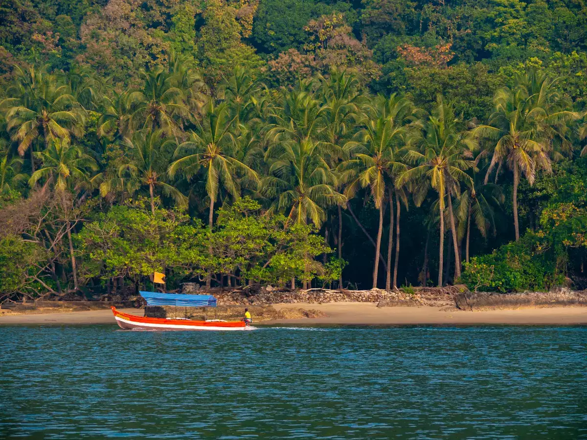
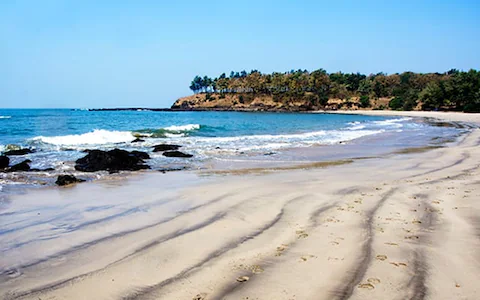

Tamhini Ghat
Situated between Pune and Konkan region across the Sahyadri mountain range, the Tamhini Ghat is the ideal place night trekking. The picturesque beauty of nature and the view of sunrise and sunset from the Peak Point and Sunset Point are worth capturing.

Harihareshwar Beach
One of the less crowded beaches in Maharashtra, the Harihareshwar beach is located in the Raigad district, around 200km from Mumbai. Surrounded by four hills named Harihareshwar, Harshinachal, Bramhadri and Pushpadri, Harihareshwar is often referred to as Dev-Ghar or "house of God". It is usually called as 'Dakshin Kashi' because of its temple dedicated to Lord Shiva. The place has a lot of accommodation options according to every budget and liking.
Harihareshwar has two beaches on either side of Harihareshwar temple, the main attraction of Harihareshwar. Maharashtra Tourism Development Corporation has also established a beach resort on the southern-most of the two beaches. One of these beaches is a straight stretch of about 2.4 km and lies in front of the temple, while the second L-shaped beach is about 2 km and lies in front of the MTDC Resort. Harihareshwar along with the two beaches named as, Shrivardhan and Diveagar Beach, form a widely popular weekend getaway, especially from Pune and Mumbai. Harihareshwar is a renowned tourist spot in Konkan and is mainly known for its temple and beaches. It is an evergreen place, i.e. it can be visited at any time throughout the year due to favourable weather conditions. It is nestled in the lap of the beautiful range of Sahyadri's hills.

Diveagar Beach
Situated in Raigad district of Maharashtra, Diveagar Beach is one of those places where people get to experience a wide range of activities such as horse riding, ATV rides, water sports. The local food stalls at the beach offer people some mouth-watering delicacies of the region.

Kashid Beach
The Kashid Beach is surrounded by lush green vegetation from one side and gushing waves on the other. Due to this, the beach is visited by a large number of people at all times of the day.

Borli Panchatan
Situated along the western coast of India, the place is one of the least explored tourist attractions of the region. On visiting the place, people may enjoy magnificent views made from a combination of Konkan hills, silent waters and lots of peace and quiet!

Aaravi Beach
People willing to witness sand bubble crabs crawling on the white sands of the beach may head towards the Aaravi Beach for a weekend getaway. Surrounded by tall trees and lush green vegetation along the beach, the entire scenario is quite panoramic to enjoy along with family or friends.

Ganapatipule Beach
Located in Khidrapur in Kolhapur district at the junction of Maharashtra and Karnataka, Kopeshwar Temple is dedicated to Lord Shiva. Built on the banks of River Krishna, the shrine boasts of a beautiful architecture with various intricate carvings on the interior and exterior walls. Besides, it also has idols of Lord Shiva, Vishnu, Brahma among others.
The Ganpatipule Beach is a spectacular and stunning beach that is located on the Konkan coastline in the Ratnagiri District of Maharashtra in southern India. This pristine beauty is also famous for the 400-year-old Ganesha Temple that can be found here, the idol of which is said to have been self-created and was discovered over 1600 years ago. The coastline of the Ganpatipule Beach is no doubt spectacular and mesmerizing, and is home to a variety of exquisite flora, which includes dense coconut trees and mangroves.
Such a picturesque landscape and serene surroundings are of course an ideal getaway from the monotonous and hectic daily life of the people of Mumbai and the neighbouring areas and is a perfect place to visit for couples, families as well as groups of friends. Nature lovers and adventure enthusiasts enjoy a lot at this place too, since the site offers not only scenic views but also a range of adventure sports in certain specific months.

Tarkarli Beach
Known for its many beaches, Tarkarli is an instance of paradise for beach lovers located in Sindhudurg district of Maharashtra. Tarkarli Beach is situated almost 7 km south of Malvan, at the confluence of the Karli River and the Arabian Sea. With countless beaches such as Kolam, Tarkarli and Achra, you could spend your whole day walking and lazing around and enjoying the various adventurous sports available.
One of the most alluring things about the Trakarli Beach is its pristine natural beauty, which has a unique charm of its own. The beach has powdery white sand and is one of the few stretches where you can see right through crystal clear waters for a distance of almost 20 feet. Gently swaying palm trees along the coastline lull you into a sense of tranquillity and you will want to spend all your days here. What makes the beaches truly magical are the occasional sighting of dolphins and turtles, both of which can be seen on numerous occasions throughout the day. Sunsets are especially endearing at the Tarkarli Beach and the beauty of this place is only enhanced in the diffused light of the dusk. A haven of natural serenity, Tarkarli Beach is a paradise in its own right.

Alibaug Beach
Located along the coast of the Arabian Sea, the Alibaug Beach is a picturesque stretch of sand situated in Maharashtra. Alibaug is a black-sand beach which offers the panoramic sight of the Kolaba fort from the shores. Amber sand lies underneath its coarser black counterpart, and its unique sight is further accentuated by the rocks that lazily lie around the entire landscape. The ruins of the fort are clearly visible from the Alibaug beach which can be easily accessed by waddling through the waters in low tides and a short boat ride during high tides. The beach is famous for its picturesque sceneries of sunrise and sunset that one must marvel when in Alibag. It is a great place to spend time in leisure while you marvel at the Arabian sea and landscapes of sunrise, sunset and the silhouette of the Kolaba Fort.
Named after the Alibaug coast, the Alibaug beach is not only popular for its scenic beauty but also for its rich history and many adventure sports activities. You can take a boat ride through the waters of the beach, which overlooks the Colaba Fort in all its glory. An unwavering symbol of all that the Maratha Empire stood for, this historic monument stands strong along the coast even today. The coastline of the beach runs for 4 kilometres along the shores of the Arabian sea and is also a settlement of a few fishing villages, where you can experience the lifestyle and culture of the locals. While here, you can also visit the Ganpati Temple, which is almost 400 years old. Visit the Alibaug Beach to experience its unique shades which range from illustrious history to thrilling activities.